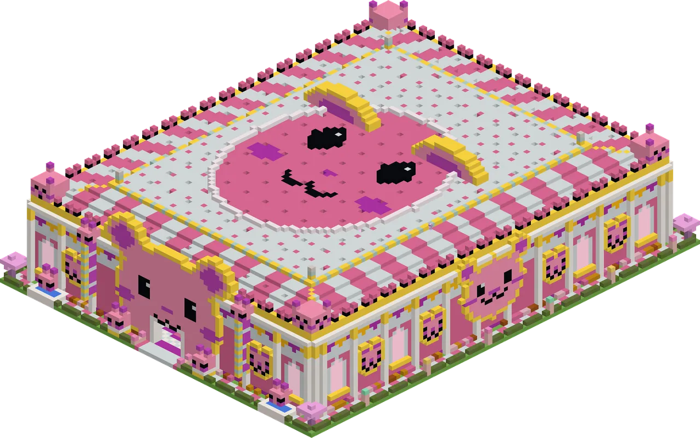

Dress up a model guh for the theme and let the jury of the Guh Beauty Theater judge.
Kleed een modelguh aan voor het thema en laat de jury van het Guh Beauty Theater oordelen.

Guh Beauty: the Vads ContestGuh Beauty: de Vads-wedstrijd
The Guh Beauty Theater is a large, rare catwalk theatre in the Guhmension; its front is a giant guh face and the door is its mouth. Talk to the Showguh on the stage to join the Vads Contest. You don't need to bring anything: the Showguh gives you a model guh, or you can let your own tamed guh walk (it gets its own clothes back afterwards). The show has three rounds, each with a theme such as Winter Fun, Gala or Dutch Weather. Dress the model from the loaner wardrobe (head, eyes, neck and body), and it walks the catwalk to the jury. Each of the three jury guhs holds up a score sign (1-10) and says why in chat: Miss Vadsma judges whether every piece fits the theme, Mister Glitterguh wants a complete look with pieces that belong together, and Granny Knabbel scores with her heart. Points earn show rosettes, which buy the Showster tiara, the Miss Vadsig sash and the glitter bow in the Showguh's shop. After every show your personal record appears in chat, and the world's top 3 floats above the Showguh.
Het Guh Beauty Theater is een groot, zeldzaam catwalktheater in de Guhmension. De gevel is een reuzenguh, en de deur is zijn mond. Praat met de Showguh op het podium om mee te doen aan de Vads-wedstrijd. Je hoeft zelf niks mee te nemen: de Showguh geeft je een model, of je laat je eigen tamme guh lopen (die krijgt na afloop zijn eigen kleertjes terug). De show heeft drie rondes, elk met een thema zoals Winterpret, Gala of Hollands Weer. Kleed het model aan uit de leenkledingkast (hoofd, ogen, nek en lijf), en het loopt over de catwalk naar de jury. Elk van de drie juryleden houdt een puntenbordje (1-10) omhoog en zegt in de chat waarom: Juf Vadsma kijkt of elk kledingstuk bij het thema past, Meneer Glitterguh wil een complete look met kleertjes die bij elkaar horen, en Oma Knabbel geeft punten met haar hart. Punten leveren showrozetten op, waarmee je in de winkel van de Showguh de Showster-tiara, de Miss Vadsig-sjerp en de glitterstrik koopt. Na elke show zie je je persoonlijke record in de chat, en boven de Showguh zweeft de top 3 van de wereld.


Prizes: clothesPrijzen: kleding
 Showster-tiara 16 showrozetten
Showster-tiara 16 showrozetten Miss Vadsig-sjerp 10 showrozetten
Miss Vadsig-sjerp 10 showrozetten Glitterstrik 6 showrozetten
Glitterstrik 6 showrozetten
Highscores in the GuhdexHighscores in de Guhdex
- Makkelijk
- Medium
- Lastig